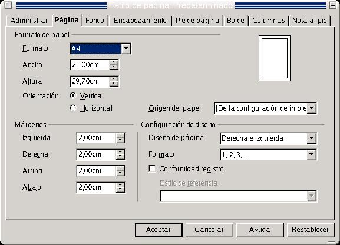
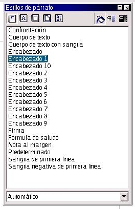

| Herramientas en GNU/LINUX para estudiantes universitarios: La suitte ofimática OpenOffice.org 1.0.1 | ||
|---|---|---|
| Anterior | Capítulo 2. OpenOffice.org 1.0.1 WRITER | Siguiente |
Las páginas de los documentos que nosotros realicemos pueden presentarse de las más diversas formas, dependiendo de las necesidades de cada momento. Así, por ejemplo, yo puedo tener un documento que requiera que se visualice en una hoja con orientación horizontal, porque sino no se verían bien los gráficos que contiene. O que las páginas tengan que ser mostradas en una hoja de tamaño A3 porque las necesidades así lo requieran. O que las páginas tengan que contener unos encabezamientos, pies o un número determinado de columnas
Todo esto se puede controlar aplicando una serie de propiedades de página
Si nos vamos a Formato-->Página, veremos un cuadro de diálogo con diversas fichas, en las que aparecen en cada una de ellas unos campos, cuadros de selección y listas, con los cuales podremos controlar la apariencia y formato final del documento

Para insertar columnas voy a Formato-->Página-->Ficha Columnas e indico el número de columnas, el ancho y espacio de cada columna y la línea de separación entre columnas
Ejemplo:
Si quiero insertar 3 columnas, del mismo ancho cada una, y una línea de separación entre las mismas de 5,05 puntos, entonces voy a Formato-->Página-->Ficha Columnas, selecciono tres columnas, y voy a línea de separación e indico 0,05. Ya tengo las tres columnas creadas.
EL formato del encabezamiento que precede a cada página del documento, se puede obtener de la siguiente forma:
Voy a Formato-->Página-->Ficha Encabezamiento-->en el botón de selección, activar encabezamiento.
Aunque el encabezamiento se aplica a todas las páginas, ppodemos definir distintos estilos y aplicarlos a cada página. Existen estilos distintos para la primera página, para las páginas de la izquierda y para las de la derecha.
Esto se hace desactivando la casilla Encabezado Par/Impar Iguales, y definimos un encabezado distinto según sea la página par o impar. Jugando con los tipos de alineamiento, podemos asignar una alineación de texto derecha para los encabezados de las páginas pares e izquierda para los de las impares, y poner el título del texto en las páginas impares y el del capítulo en las pares, en caso de que estemos escribiendo alguna obra
También podemos definir un encabezado y pie de página para la primera página, pero esto se hace usando el cuadro de diálogo Estilista, dentro del menú formato. Se accede también a él pulsando F11. No vamos a hablar del Estilista, para no salirnos del tema. Lo dejo como comentario para quien quiera profundizar.

Para el pie de página, es lo mismo. Hay que trasladarse a la ficha Pie de Página y activarlo con el botón de selección.
Con el pie de página ocurre lo mismo que con el encabezamiento. Aunque se aplica a todas las páginas, podemos definir estilos distintos para la primera página, para las impares y para las pares.
Para ello, desactivamos la casilla Pie de Página Par/Impar Iguales, y definimos un pie distinto según sea par o impar la página. Normalmente se pone el número de página, alineándolo a la izquierda si la página es impar y a la derecha si es par.
Ejercicio:
Hacer un encabezado y un pie de página con las siguientes propiedades:
Encabezado izquierdo: Nombre del texto alineado a la izquierda
Encabezado derecho: nombre del capítulo en que me encuentro, alineado a la derecha
Pie de página izquierdo: Número de página en que me encuentro actualmente, alineado a la izquierda. El número de página se obtiene en menú Insertar-->Campos-->Número de página
Pie de página derecho: Lo mismo pero alineado a la derecha
Esto es muy útil, sobre todo para aquellos documentos que por sus características especiales, no puedan imprimirse en formato de página normal A4. Suelen ser documentos que contienen gráficos, tablas, datos estadísticos, informes, etc..
El tamaño estándar de papel que usa el computador es el A4, aunque puedo definir otro, según la necesidad que tenga
Para ello he de ir a la ficha Página y especificar el formato
Abajo, puedo especificar la orientación del papel, que es horizontal o vertical, según convenga. Especificaré horizontal si lo que voy a escribir es un texto o cualquier trabajo con sus imágenes, o gráficos que no sean demasiado complejos. Se suele especificar horizontal, cuando el espacio para texto en el formato vertical resulta insuficiente para contener todos los objetos, gráficos o imágenes, alineándolos y posicionándolos según se desee, o si los mismos objetos no caben en los márgenes de la hoja en orientación vertical
Un margen es la distancia que se deja entre el fin de la hoja y el inicio o fin de línea de un texto. Podemos indicar unos márgenes a la izquierda, derecha, arriba o abajo según como deseemos que el texto quede posicionado
Ejemplo y ejercicio:
Escribir el siguiente texto, en un documento que tenga el siguiente formato de página abajo indicado:
Lo único que hacía su vida soportable, dijo alguién no hace mucho por la radio, era la esperanza de un mañana mejor. También dijo que todos tenemos el condenado deber de procurar por todos los medios de que nuestros hijos no vivan pero que nosotros. Pero no dijo que debamos empezar a trabajar por nuestra felicidad hoy mismo.
Orientación Horizontal
Formato de Hoja:B5(ISO)
Márgenes:
Izquierdo:3,50
Derecho:3,50
Inferior:3,50
Superior:3,50
Reducir todos los márgenes hasta 2 y ver lo que pasa
Jugar con la orientación, el formato y los márgenes